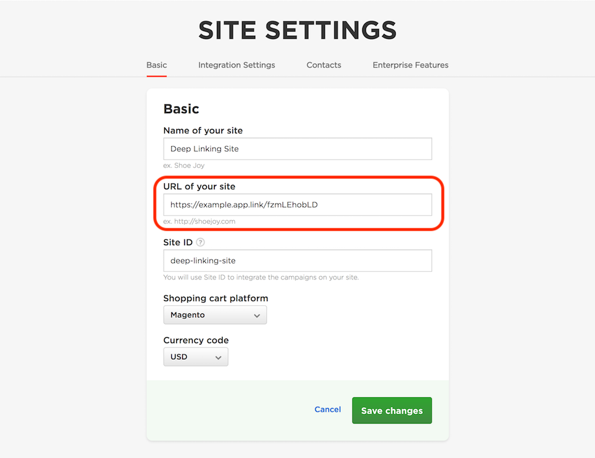

Integration with Third Party Deep Linking Services¶
Talkable can work with third party deep linking providers such as GetSocial, Branch.io, and Firebase. Talkable is able to use deep linking functionality to track app installations and reward your Advocates and Friends for installing your mobile app on their phones.
Deep linking services provide a special referral link that can be given to Advocates to be shared with their Friends. Once opened on a Friend’s mobile device, this link will not only redirect them to the App Store to install the app, but also track that the app was installed using a referral link. Deep linking can also be used to send a Friend to a specific place in the app once it’s installed and opened for the first time, show them personalized messages, and more.
1. Configure your Talkable campaign¶
To use deep linking with Talkable campaigns, simply use your deep link URL as your Talkable Site URL.
Note
If you have configured a custom Friend Destination URL for your campaign, make sure the following GET parameters
are present in the final URL: ?talkable_visitor_uuid={{ visitor_uuid }}&talkable_visitor_offer_id={{ friend_offer.id }}.
All major deep linking providers support passing additional GET parameters with the deep link. This functionality is used to pass the Friend’s identifying information to the Talkable SDK in your iOS app. To use this functionality with Firebase, refer to this document: Manually constructing a Dynamic Link URL.
2. Pass deep linking params to the Talkable SDK¶
Retrieve deep linking params as described in your deep linking provider’s documentation
and pass these params to the Talkable SDK using handleOpenURL: or handleURLParams: method.
Use handleURLParams: method if you have a NSDictionary with params passed to the deep link handler block (Branch.io, GetSocial).
// For Branch.io
[[Branch getInstance] initSessionWithLaunchOptions:launchOptions andRegisterDeepLinkHandler:^(NSDictionary *params, NSError *error) {
[[Talkable manager] handleURLParams:params];
}];
Note
Most deep linking services provide additional parameters in the deep link handler to indicate whether the app was installed on this device for the first time, reinstalled or simply launched. You can use these params to register installs only when desired conditions are met.
// For GetSocial
[GetSocial referralDataWithSuccess:^(GetSocialReferralData * _Nullable referralData) {
if ([referralData isFirstMatch]) {
[[Talkable manager] handleURLParams:[referralData linkParams]];
}
} failure:^(NSError * _Nonnull error) {}];
Use handleOpenURL: method if you handle deep link as NSURL using the standard
application:openURL:options: method (Firebase).
// For Firebase
- (BOOL)application:(UIApplication *)app
openURL:(NSURL *)url
options:(NSDictionary<NSString *, id> *)options {
[[Talkable manager] handleOpenURL:url];
}
Calling either of these methods will register the app installation event in Talkable and complete the referral cycle. You can then use the retrieveRewardsWithHandler: method to check for rewards or subscribe to a corresponding notification.